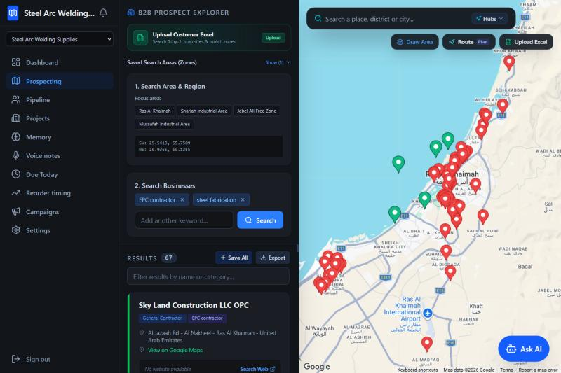
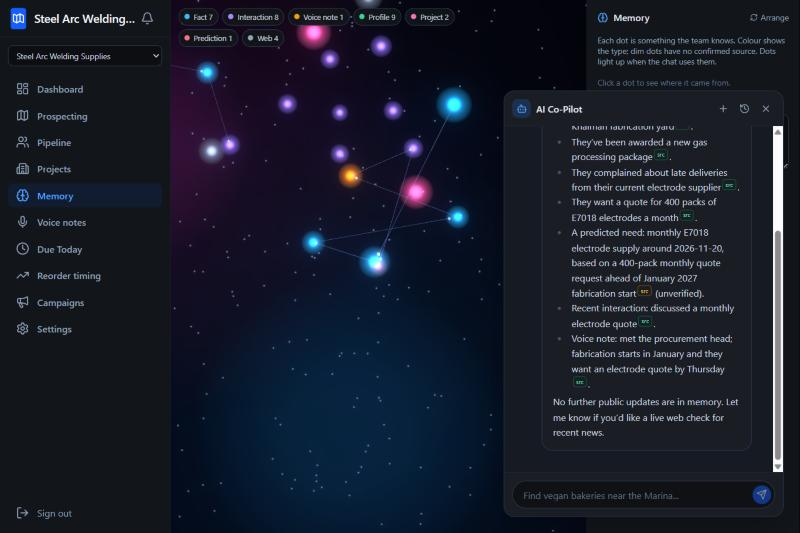
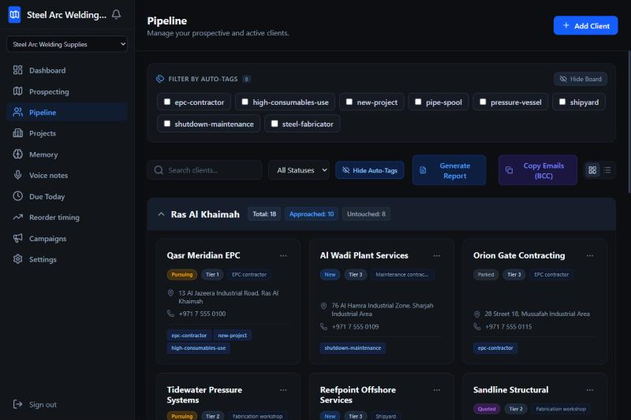
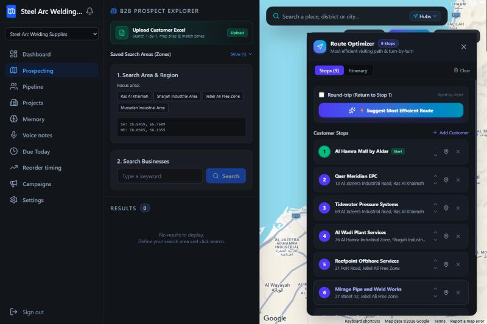

Print this. DO is what you do on the page. SAY is what you speak. WHY IT WINS is the advantage the judge should notice. Target length 2:50. Hard limit 3:00.
/api/health: it must say OK.| Clip | DO (page and actions) | SAY (speak this) |
|---|---|---|
| A 0:00 to 0:12 |
DO Show a plain Google Maps tab. Cut to the app: Prospecting (/), map visible, organisation selector in the sidebar. |
SAY "When I went out to find customers, nothing told me what was around me: which businesses are nearby, what they do, and who is worth a visit. So I built Finding with Nemo." WHY IT WINS A real problem, stated in one breath. |
| B 0:12 to 0:24 |
DO Prospecting. Pick a focus-area chip, set radius 25 km. Chat (Ask AI button): Find software and IT companies hiring in my selected area. Hold on the pins and result list. |
SAY "It works for a job seeker. Pick an area, ask for software and IT companies, and you get a map of employers and their details." WHY IT WINS One engine, many users. |
| C 0:24 to 0:34 |
DO Same page. Chat: Find steel plate and welding consumables suppliers in my selected area. Open one result card. |
SAY "And for procurement: ask for steel and welding consumables suppliers, and the nearby ones appear on the map." WHY IT WINS Shortlist suppliers in minutes, not days. |
| D 0:34 to 0:40 |
DO Select Steel Arc Welding Supplies in the sidebar selector. Left panel: click chip Ras Al Khaimah, radius 25 km. Do not type yet. | SAY "Now the main case: a sales team selling welding supplies to fabricators and EPC contractors. I select my area." WHY IT WINS The map opens on your own city automatically. |
| E 0:40 to 0:58 |
DO Chat: Find welding fabrication companies and EPC contractors in my selected area. (Backup that works: in "2. Search Businesses" add keywords EPC contractor and steel fabrication, press Search; about 67 results.) Hold on the pins. |
SAY "The agent sees my screen, so I never describe the area. It searches Google Maps for my own tags inside that circle." WHY IT WINS Screen-aware agent; real, current businesses. |
| F 0:58 to 1:12 |
DO Chat: Save these. An approval card appears. Read its text, then press Approve. |
SAY "It proposes what to save, and nothing changes until I approve. It also remembers new tags for next time." WHY IT WINS Human stays in control; the app learns your tags. |
| G 1:12 to 1:22 |
DO Chat: What do we know about Qasr Meridian EPC? Wait for the answer with source badges; the memory dots light up if you are on the Memory page. |
SAY "I ask what we know about a client. The answer cites its sources: a meeting note, a voice note, a project." WHY IT WINS Every statement points back to evidence. |
| H 1:22 to 1:42 |
DO Save one real EPC contractor from the results (Save). Open Pipeline (/pipeline), open that client. Press Fetch cited web research. Show the brief with [1] [2], click one numbered source link. |
SAY "Now research. Tavily brings back the live web and Nemotron writes a short brief. Each sentence carries a quote, and our code keeps it only if that exact quote is on the page. So I only see what the page really says." WHY IT WINS Cited research you can trust, in seconds. |
| I 1:42 to 2:02 |
DO Chat on that client: Any recent news about <contractor name> in the UAE? Cite sources. Show the label "Searching the web with Tavily", then the answer and its closing line. |
SAY "I can also ask the agent for recent news. It tells me it is searching with Tavily, and answers with sources." WHY IT WINS Live web research inside the chat. |
| J 2:02 to 2:18 |
DO Chat: Plan a route starting at Al Hamra Mall to my saved clients. The route drawer opens: start point first, stops after. Press Approve. |
SAY "In the field I ask for a route from where I am. The saved clients become the stops." WHY IT WINS Plans the day around your position. |
| K 2:18 to 2:32 |
DO Voice notes (/voice). Pick the client. Record 10 s, then paste the transcript in the box under the audio. Save voice note. Show original, English, ticked facts. |
SAY "After a visit I record a note. It is translated, stored encrypted, and each fact is checked against what was said." WHY IT WINS Nothing a salesperson hears is lost. |
| L 2:32 to 2:44 |
DO Memory (/memory), chat closed first, slowly rotate the glowing 3D view. Open chat, ask: What do we know about Qasr Meridian EPC? Dots light up; click one to show its source quote. |
SAY "Everything the team learns becomes a memory, one dot each. I ask a question and the dots the agent used light up, with links to the source." WHY IT WINS Team knowledge that does not walk out the door. |
| M 2:44 to 2:55 |
DO GitHub README architecture picture, then the live URL in the address bar. | SAY "Three NVIDIA Nemotron models run on Nebius Token Factory. Ultra does careful reasoning and fact extraction. Super runs the agent and writes the research briefs. Nano does the fast checks. Embeddings power the memory, and Tavily brings in the live web so every claim points to a real page. Open source, Apache 2.0. Finding with Nemo." WHY IT WINS Clear use of every required technology. |
| Problem | Fix |
|---|---|
| Agent takes 30 to 60 seconds | Normal. Cut the wait in the edit. Never narrate over a spinner. |
| Search shows few or wrong results | Use the keyword boxes (EPC contractor, steel fabrication) in "2. Search Businesses" and press Search. |
| Research card finds little | Use a bigger, well-known company, not a small local shop. |
| Chat shows a database error after switching organisation | Press + for a new chat, or redeploy the latest image. |
| Voice recognition fails | Paste the transcript. Do not say it was transcribed from your voice. |
| "Request limit reached" | Use your unlimited account, not the judge account. |
| Over 3:00 | Cut clips in this order: C, then K, then G. Never cut E, F, H or I. |



